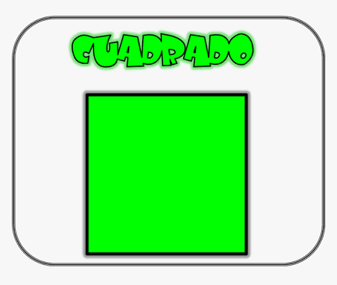
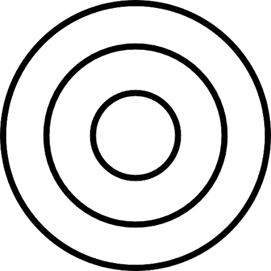
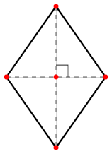

Servicio Nacional de Aprendizaje - SENA
Evidencia GA2-240201528-AA4-EV01
Tecnólogo en Guianza Turística
Ficha 3497850
Nayder Jesus Ballesteros Novoa
Oscar Escobar
Mauricio Rodriguez Suarez
Javier Antonio Velasco Mendoza
Tecnólogo en Guianza Turística
Ficha 3497850
Las matemáticas permiten resolver problemas presentes en la vida diaria mediante procedimientos organizados y precisos. Entre las operaciones más utilizadas se encuentran el cálculo de áreas, perímetros y volúmenes de figuras geométricas.
Para facilitar estos procesos se desarrolló una aplicación web capaz de calcular automáticamente diferentes figuras planas y sólidos geométricos utilizando algoritmos programados en JavaScript.
En diferentes actividades académicas, profesionales y cotidianas es necesario calcular áreas, perímetros y volúmenes de distintas figuras geométricas. Cuando estos cálculos se realizan manualmente pueden presentarse errores que afectan los resultados.
Para solucionar este problema se diseñó una aplicación web que permite automatizar los cálculos mediante un algoritmo que solicita los datos necesarios, aplica la fórmula correspondiente y muestra el resultado de forma inmediata.
| Figura | Área | Perímetro |
|---|---|---|
| Triángulo | (Base × Altura) ÷ 2 | a + b + c |
| Rectángulo | Base × Altura | 2(Base + Altura) |
| Cuadrado | Lado² | 4 × Lado |
| Círculo | π × r² | 2 × π × r |
| Rombo | (D × d) ÷ 2 | 4 × Lado |
| Trapecio | ((B + b) × h) ÷ 2 | B + b + c + d |

Área = (Base × Altura) ÷ 2
Perímetro = a + b + c

Área = Base × Altura
Perímetro = 2(Base + Altura)

Área = Lado²
Perímetro = 4 × Lado

Área = π × r²
Perímetro = 2 × π × r

Área = (D × d) ÷ 2
Perímetro = 4 × Lado
Área = ((B + b) × h) ÷ 2
Perímetro = B + b + c + d
| Sólido | Volumen |
|---|---|
| Cubo | Lado³ |
| Cilindro | π × r² × h |
| Cono | (π × r² × h) ÷ 3 |
| Esfera | (4 × π × r³) ÷ 3 |

Volumen = Lado³

Volumen = π × r² × h

Volumen = (π × r² × h) ÷ 3

Volumen = (4 × π × r³) ÷ 3
Aquí aparecerá el resultado.
Aquí aparecerá el procedimiento del cálculo.
El usuario selecciona si desea calcular una figura plana o un sólido geométrico.
El sistema muestra las figuras correspondientes al tipo seleccionado.
El usuario ingresa las medidas solicitadas.
El algoritmo identifica la fórmula matemática correspondiente.
Se realizan los cálculos de área, perímetro o volumen según la figura elegida.
El sistema muestra el procedimiento y el resultado obtenido.
Los algoritmos permiten automatizar cálculos matemáticos de forma rápida, organizada y precisa.
El desarrollo de esta aplicación permitió aplicar conocimientos de matemáticas y programación para resolver problemas relacionados con figuras planas y sólidos geométricos.
La utilización de herramientas computacionales disminuye errores de cálculo y facilita el aprendizaje de las fórmulas geométricas.